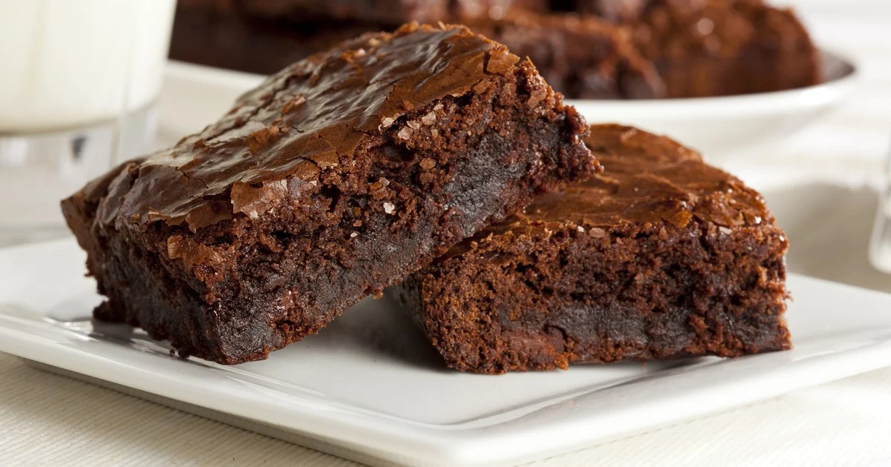

Classic chocolate brownie. The infallible and easy recipe

I don't know anything denser and with as much chocolate flavor as a
good brownie. It is the dessert that we like most at home, with a light
crispy layer on the outside and all the chocolate flavor inside,
dense, juicy and deliciously addictive, I do not tire of making
them.
This chocolate cake does not like everyone, some say it is too dry,
others that it is not spongy like a cake, or that it is not crispy...
Well, I assure you that everyone will like it: its texture is perfect,
crisp on the outside and juicy on the inside. It is one of those
dessert recipes perfect for very very chocolate makers.
Ingredients
- 200 g. of unsalted butter
- 180 g. dark chocolate 70% minimum (the brand you like best)
- 2 eggs
- 225 g normal sugar or icing
- 30 g. unsweetened cocoa powder (I recommend 70%)
- spoon of essence of vanilla
- 120 g of wheat flour
- Optional: 50 g. of chopped nuts
Steps
Prepare the dough
- Melt the chopped chocolate and butter in a bain-marie. Stir at
all times until you get a homogeneous cream. To make the water
bath, we would put a pot on the fire with water and another pot
on top so that it does not touch the bottom.
- If we can't make a water bath at home, we can melt the chocolate
with the butter in the microwave. We would heat the chocolate
with the butter for 2 minutes, remove, and stir. We would repeat
the operation several times until we get a smooth and shiny
mixture.
- Let the chocolate-butter mixture harden to continue the chocolate
brownie preparation process. Set aside.
- In a bowl beat the two eggs with the sugar, vanilla essence and salt point.
- When we have a foamy cream we add it to the chocolate that we
have reserved and tempered. We will add the eggs gradually,
integrating them with the chocolate with the help of some rods.
- Add the unsweetened cocoa and flour. Mix with the rods to
integrate these solids into the mixture.
Bake the brownie
- Grease a mold about 20 x 20 cm and cover it with baking paper.
Pour the brownie mixture and tap to regulate the surface.
- Preheat the oven to 170º C above and below, without the fan
option. Bake the brownie for 40 minutes.
- When it has been in the oven for 20 minutes we cover with a
little aluminum foil so that the surface does not burn and
the crust is perfect and crispy.
- Remember that the brownie should not be raw or very dry, it
should have a balance. So it should be baked in its right
measure. It is important to know your oven. I recommend
pricking it almost at the end with a knife and leaving with a
little crumb stuck. This does not mean that it is raw,
because when you take it out is such heat that keeps inside
that will continue to cook.
- Let it cool in the mould for about 15 minutes, lower its
temperature, on a rack. When it is cold we cut it into
several portions. Your pieces ready to eat and enjoy your
favorite brownie.